扉页
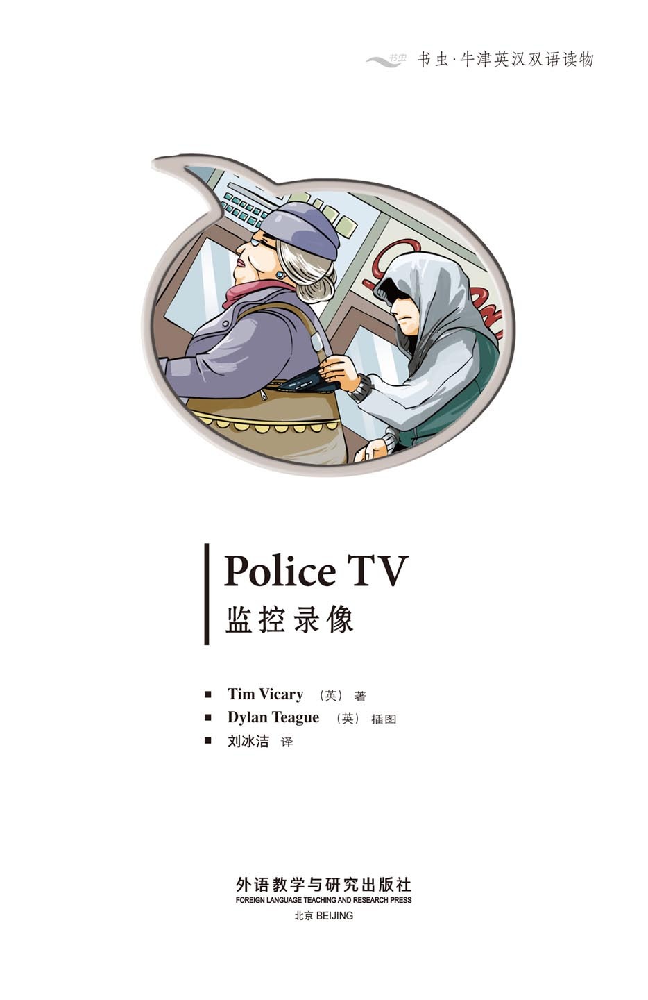
版权页
京权图字：01-2013-7808
Published by arrangement with Oxford University Press for sale in the People's Republic of China only and not for export therefrom. This edition is for sale in the mainland of China only, excluding Hong Kong SAR, Macao SAR and Taiwan.
© Oxford University Press 2008
Oxford is a registered trademark of Oxford University Press
图书在版编目（CIP）数据
监控录像：英汉对照／（英）维卡（Vicary, T.）著；（英）蒂格（Teague, D.）绘；刘冰洁译．—北京：外语教学与研究出版社，2013.11
（书虫·牛津英汉双语读物）
书名原文：Police TV
ISBN 978-7-5135-3778-0
Ⅰ．①监… Ⅱ．①维…②蒂…③刘… Ⅲ．①英语－汉语－对照读物②短篇小说－英国－现代 Ⅳ．①H319.4：I
中国版本图书馆CIP数据核字（2013）第271146号
出版人 蔡剑峰
责任编辑 罗来鸥
封面设计 蔡 颖
出版发行 外语教学与研究出版社
社 址 北京市西三环北路19号（100089）
网 址 http://www.fltrp.com
版 次 2013年12月第1版
书 号 ISBN 978-7-5135-3778-0
制售盗版必究 举报查实奖励
版权保护举报电话：（010）88817519
内容简介
内容简介
你出去购物时会随身带多少钱？你会不会很小心？有时会有人当街偷钱——这时你就需要警察的帮助。
丹、苏和吉姆是伦敦的警察。他们最近很不开心，因为有个小偷每天都从商店附近的人身上偷钱。
他们怎样才能找到这个小偷？这个小偷长什么样——是男是女？是老是少？要弄清这些可不容易。
他们有什么设备可以帮上忙吗？他们有对讲机——可小偷有手机。丹、苏和吉姆需要一样小偷没有的东西——他们需要监控录像！
POLICE TV
POLICE TV
How much money do you take with you when you go shopping? Are you careful? Sometimes people steal money in the street – then you need the police to help you.
Dan, Sue, and Jim are police officers in London. They are not happy because a robber steals money from people near some shops every day.
How can they find the robber? What does the robber look like – is it a man or a woman? Old or young? It is not always easy to know.
What do they have to help them? They have radios – but robbers have phones. Dan, Sue, and Jim need something that the robber doesn't have – they need Police TV!
目录
1 The jogger
1 THE JOGGER
Dan and Sue are police officers in London. It is a Tuesday morning, and Dan is angry.
'What's the matter, Dan?' Sue asks.
'Look at this,' Dan says. 'Every day someone steals money from people near the shops. We must stop this.'
'Yes, of course,' Sue says. 'But who is it?'
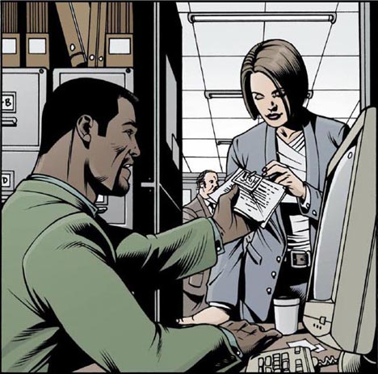
'There is a jogger,' Dan says. 'Every day he runs near the shops. Sometimes he runs into people. Perhaps he steals the money.'
'OK,' Sue says. 'Let's go to the shops. Perhaps we can see this jogger.'
They sit upstairs in a window over the shops. Dan has a radio. They watch the people in the street.
'Look!' Sue says. 'There's the jogger!'
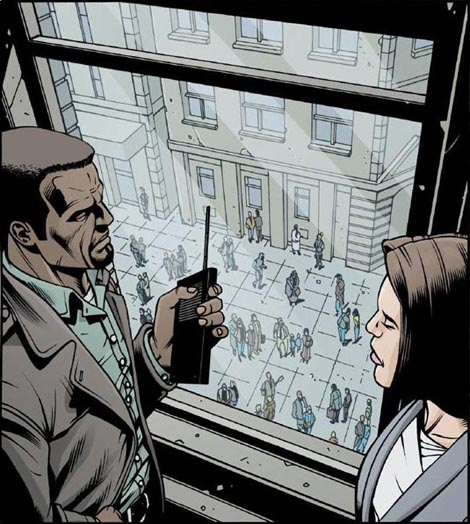
The young man runs into an old woman, and she falls down. The jogger puts his hand on the old woman's arm. 'I'm sorry,' he says. 'Can I help you? Here's your bag.'
Then a young woman shouts at him. 'Don't run here!' she says. 'It's dangerous! Go away!'
The young man runs away. Dan talks in his radio. 'Quick! Stop him! He's running up North Street!'
A police car stops the young man in North Street.
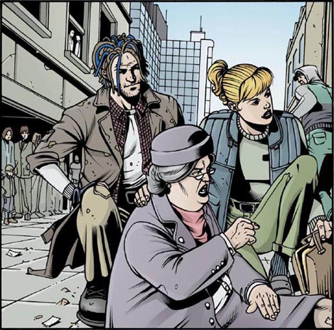
'Are you OK now?' Sue asks the old woman.
'Yes, thank you. Where is that nice young woman? I can't see her now.'
'Have you got all your money?' Sue asks.
The old woman looks in her bag. 'No, I haven't! My money's in my purse. But my purse isn't here!'
'OK Sue,' Dan says. 'Let's talk to the jogger!'
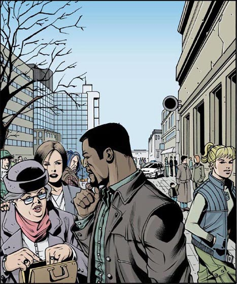
'Who are you?' Sue asks the young man.
'My name's Peter Jones. Why? Who are you?'
'We're police officers. Why do you go running past the shops every day?'
'Why not? I like running.'
'OK,' Dan says. 'Let's look for the money.'
'What money?' Peter Jones asks. 'What are you talking about? I never take money with me when I run.'
Dan looks for the money but he cannot find any.
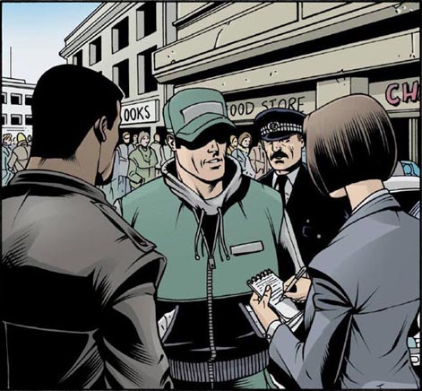
'Can I go now?' Peter Jones asks.
'OK,' Dan says angrily. 'But don't come back!'
'Why not?' Peter asks angrily. 'I live here! And I'm not doing anything wrong!' He runs away.
'What do we do now?' Sue asks. 'Where is the old woman's money, and her purse?'
'I don't know,' says Dan. 'Somebody has it. But who?'
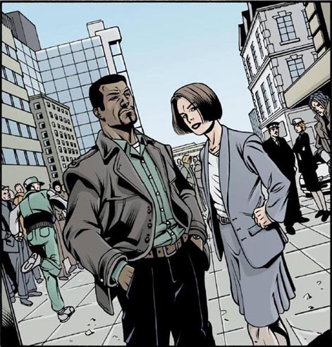
2 TV
2 TV
Dan and Sue go back to the shops. 'I don't understand,' Dan says. 'The jogger hasn't got the money so we must look for someone different.'
'Look,' Sue says. 'There's a TV camera over that shop door. Perhaps that can help us.'
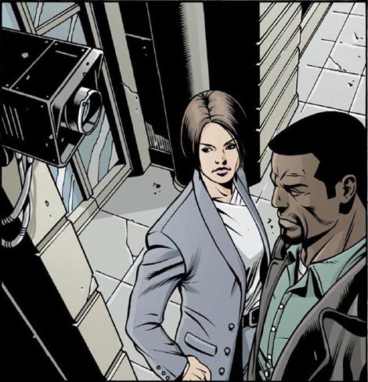
They go into the shop and watch the video.
'Look,' Sue says. 'There's the old woman. She's getting money from the bank and putting it into her purse. Now she's putting the purse into the bag.'
'Stop the video there,' says Dan. 'Now, look carefully. Is anybody watching her?'
'There are a lot of people in the street,' Sue says. 'I'm not sure. Is it that man with the long hair?'
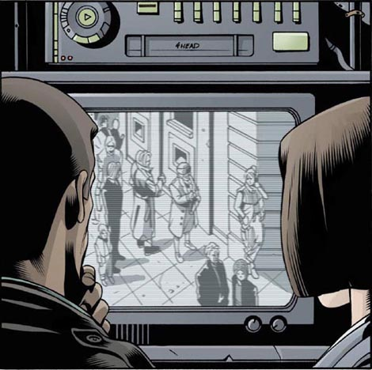
'Perhaps,' says Dan. 'Let's go on. What happens next?'
They watch the video. The jogger runs into the old lady. He stops and helps her. She shouts at him and he runs away. Then a lot of people come and help the old lady.
'Look!' Sue says. 'The long-haired man has her arm.'
'Yes, but that woman has her bag,' Dan says. 'What's she doing with it? Oh! I can't see! There's a man in front of her!'
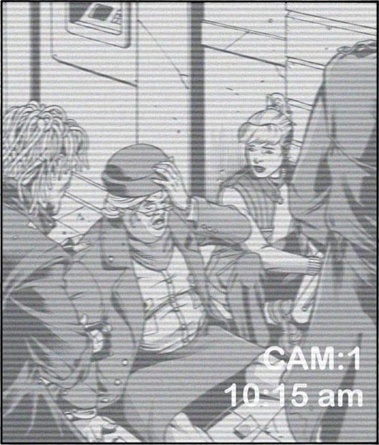
'Listen, I have an idea,' Dan says. 'You go to the bank tomorrow, and take some money out.'
'Why's that a good idea?' Sue asks.
'Because we can watch you,' Dan answers. 'Get a lot of money from the bank, and let everybody in the street see it. Take a radio too, so you can talk to me.'
'OK,' Sue says. 'We can do that tomorrow morning, then.'
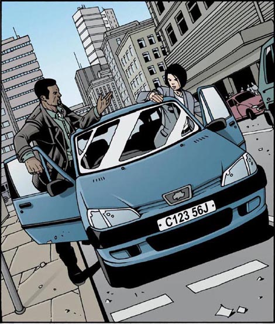
3 Help me! Quick!
3 HELP ME! QUICK!
Next day Sue goes to the bank. Dan is watching with another policeman, Jim. They have radios.
'I'm getting the money now,' Sue says.
'That's good, Sue,' Dan says on his radio. 'Now let everybody see it.'
Sue drops some money near her feet. People in the street look at her.
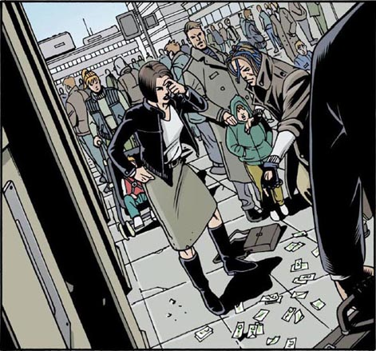
'Look – there's the man with the long hair!' Jim says. 'He's picking up the money. Shall I arrest him?'
'No, wait,' Dan says. 'Watch.'
The man picks up the money and gives it to Sue. 'Here you are,' he says. 'That's a lot of money – be careful!'
'Thanks,' Sue says.
'That's OK.' The man smiles and walks away.
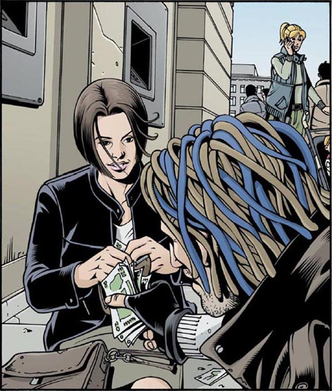
'Have you got all the money, Sue?' Dan asks by radio. 'Yes, it's all here,' Sue says. 'What can I do now?'
'Buy some things in the shops, and then walk slowly down the street,' Dan says. 'We're watching you.'
Sue buys some apples, milk and bread. Then she walks slowly down the street. Dan and Jim watch her go.
'Is anybody following me?' Sue asks.
'No,' Dan says. 'There's a woman with a baby. That's all.'
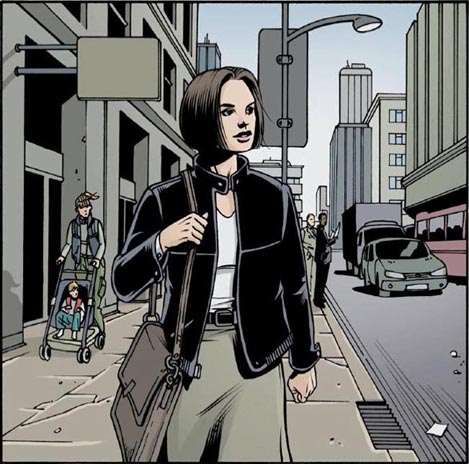
'Don't follow me,' Sue says into the radio. 'Nobody must see you. I'm turning right, into Smith Street... now I'm turning left into Peg Lane. The woman with the baby is following me... I'm turning right, into Dale Avenue.'
'Are there lots of people about?' Dan asks.
'No, it's very quiet. Nothing is happening.'
Dan and Jim wait. Then Sue shouts: 'Be careful! Oh, help me, quick! Help!'
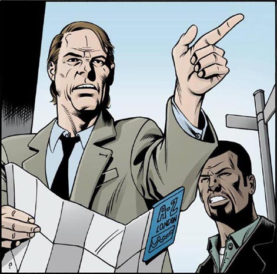
The jogger, Peter Jones, runs into Sue and she falls over. There are apples, milk and bread everywhere.
'I'm sorry,' says the man. 'Let me help you.'
The woman takes Sue's arm. 'Are you OK?' she asks. 'Go away!' she shouts at the man.
But he sees the radio in Sue's pocket. 'What's this?' he asks. 'A police radio? Give me the money, quick!'
He takes the money and runs.
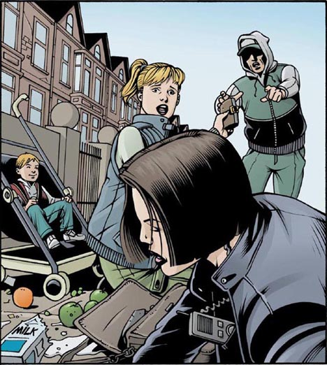
The woman wants to run after him but Sue holds her. 'Stop!' she says. 'I'm a police officer. You must stay here!'
'But why?' the woman asks. 'I want to help you. That man has your money – I haven't got it!'
'Is he your friend?' Sue asks. 'Where does he live?'
'I don't know,' the woman says. 'I don't know him.'
'Who are you?' Sue asks. 'Where do you live?'
'Linda... Linda Wilks. I live at 14, Old Street.'
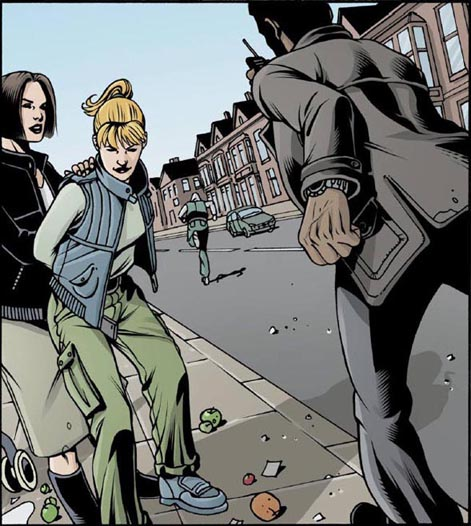
4 Man with a knife
4 MAN WITH A KNIFE
Dan runs up to Sue. 'Are you OK?' he asks.
'Yes, I'm OK,' she says. 'Go on, Dan – run!'
Sue calls a police car on her radio. Dan runs after Peter Jones. 'Jim, he's turning left into Dock Lane!' he shouts. 'Can you see him?'

'I can see him but he's running very fast,' Jim says. The jogger sees Jim and gets into a boat. Jim runs to the river and gets into the boat, too.
'Stop!' Jim says. 'I'm a police officer – Oh no!'
The jogger, Peter Jones, hits Jim and he falls into the water. The boat goes across the river.
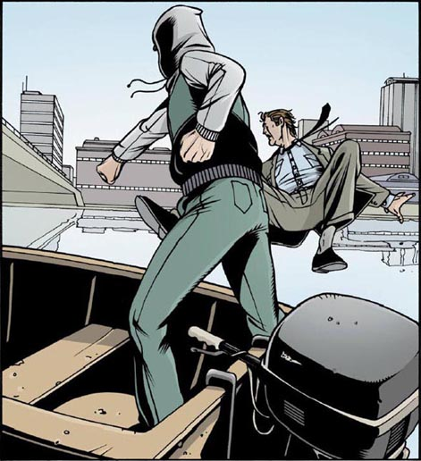
Dan helps Jim out of the water. 'He's going into a café,' Dan says. 'Come on – let's run to that bridge!'
They go across the bridge and run to the café. Jim goes behind the café and Dan goes in.
'Is he in there?' Jim asks on his radio.
'Yes,' Dan answers. 'Jim – he's coming out!'
'Stop,' says Jim. 'I'm a police officer.'
But Peter has a knife in his hand.
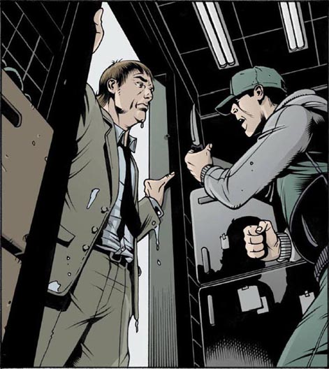
Jim holds out his hand. 'Give me the knife, Peter.'
'Stay back!' Peter says. 'I can kill you with this.'
Jim can see Dan in the door behind Peter. Dan walks out of the door, very slowly and quietly.
'Come on, Peter,' says Jim. 'Give me the knife.'
Dan takes Peter's arms from behind, and Jim takes the knife from his hand. Dan finds the money in Peter's trousers.
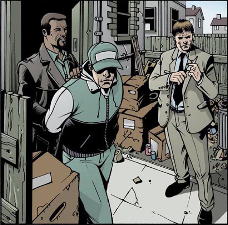
5 At the police station
5 AT THE POLICE STATION
'I want to go home now,' says Linda. 'My baby is hungry and tired.'
'Do you know Peter Jones?' Sue asks. 'Do you and Peter steal money from people?'
'No, I don't know him. And I never steal money.'
'Do you know this woman, Peter?' Dan asks.
'No,' says Peter. 'I don't know her. Who is she?'
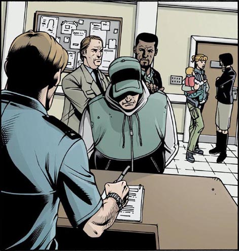
Dan and Sue go back to their office.
'Does Linda work with Peter?' Dan asks Sue.
'Yes, she does,' says Sue. 'Watch this video. Look – there she is! She's watching me get the money, and now she's talking to someone on her phone.'
'But who is she talking to?'
'She's talking to Peter, of course. Now she's following me and talking to him again. She's talking about me.'
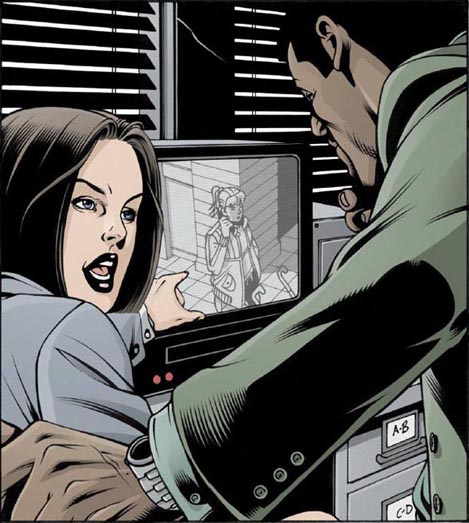
Dan and Sue speak to Linda again.
'Can I see your phone, please, Ms Wilks?' Sue asks.
'My phone? Why do you want to see that?'
'Well, it remembers a lot of numbers.'
Sue presses 1 on Linda's phone. Peter's phone begins to ring. Sue laughs. 'Let me ask you again, Ms Wilks. Do you know Peter Jones?'
'Well, yes, OK. I know him. But I don't steal money.'
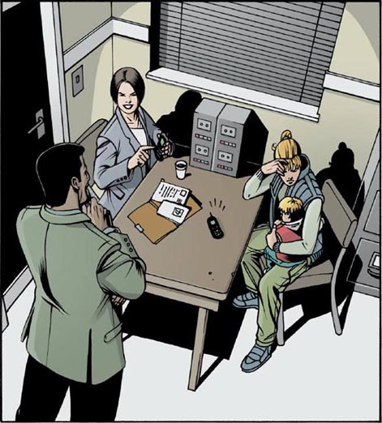
Sue and Dan take Linda home. They go into her house.
'There's two hundred pounds under your bed, Linda,' Dan says. 'And look – this is the old lady's purse.'
'This is a nice photo of you and the baby,' Sue says. 'But who is the man? Is he the baby's father?'
'OK, it's Peter,' says Linda. 'And yes, I do steal the money. I'm sorry, OK?'
'No, Linda, it's not OK,' Sue says. 'It's not OK at all.'
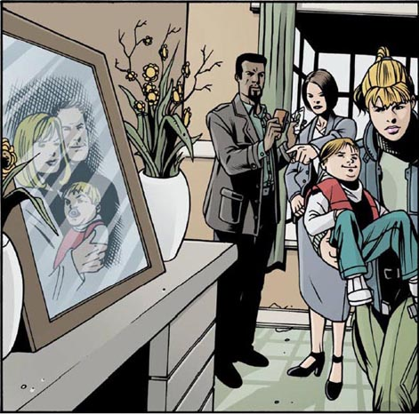
GLOSSARY 词汇表
GLOSSARY
词汇表
arrest v. when the police find a bad man and take him to the police station 逮捕，拘捕
bridge n. a road or path that goes over water 桥，桥梁
buy v. get something from a shop with money 买，购买
café n. a place where you sit and drink coffee or tea 咖啡馆
dangerous adj. something that can hurt you is dangerous 危险的，有危害的
follow v. walk behind someone 跟着，跟随
idea n. something you think 想法，主意
jogger n. a runner 慢跑者
let v. make it easy for something to happen 让，使；任由
police officer n. a man or woman in the police 警察，警官
purse n. a small bag for money 钱包
shout v. talk very loudly 大声说，喊叫
steal v. take something that is not yours 偷，窃取
turn v. go left or right 转弯，转向
ACTIVITIES 阅读练习
Police TV
ACTIVITIES
阅读练习
ACTIVITIES
Before Reading
1 Look at the front and back covers and then answer the questions. Tick one box for each question.
1) When does the story happen?
a □ In the present.
b □ In the future.
c □ Long ago.
2) Who is the story about?
a □ Young people.
b □ Older people.
c □ Children.
3) Who steals money from people?
a □ Dan.
b □ A robber.
c □ The police.
4) What kind of story is this?
a □ Frightening.
b □ Exciting.
c □ ......... (You can write your own answer.)
ACTIVITIES
While Reading
1 Read the first half of Chapter 1 and then answer these questions.
1) What happens every day near the shops?
a □ A woman runs past the shops.
b □ Someone takes money from people.
c □ Dan and Sue go shopping.
2) What does the young man do to the old woman?
a □ He puts his hand on her arm.
b □ He puts his hand on her leg.
c □ He takes her bag.
2 Read the second half of Chapter 1. Who says this in the story?
1) 'Have you got all your money?'
2) 'My purse isn't here!'
3) 'I like running.'
4) 'OK. But don't come back!'
3 Read Chapter 2. Answer these questions.
1) What does Sue see over the shop door?
2) What do Dan and Sue do in the shop?
3) How many people come to help the old lady?
4) Who goes to the bank and takes some money out?
4 Read Chapter 3. Are these statements true (T) or false (F)?
1) The man with the long hair picks up the money.
T □／F □
2) The man with the long hair takes the money from Sue.
T □／F □
3) Sue is following a woman with a baby.
T □／F □
4) It's very quiet in Dale Avenue.
T □／F □
5) Peter Jones takes the radio from Sue's pocket.
T □／F □
5 Read Chapter 4. Answer these questions.
Who
1) ... calls a police car on her radio?
2) ... hits Jim?
3) ... helps Jim out of the water?
4) ... goes behind the café?
5) ... takes Peter's arms from behind?
6 Before you read Chapter 5, can you guess what happens?
1) The police take Peter to the police station.
YES □／NO □
2) Linda knows Peter.
YES □／NO □
3) Linda tries to help Peter.
YES □／NO □
4) Linda is angry with Peter.
YES □／NO □
5) Peter runs away, but Linda finds him.
YES □／NO □
ACTIVITIES
After Reading
1 Use these words to join these sentences together.
and but so because
1) Peter Jones runs into the old woman. She falls down.
2) The old woman looks in her bag. She can't find her purse.
3) Dan has a radio. He can talk to Sue.
4) Peter is afraid. He sees a radio in Sue's pocket.
2 Put these seven sentences in the right order.
a □ Peter Jones runs into Sue.
b □ She drops the money in the street.
c □ Sue walks into Smith Street, Peg Lane, and Dale Avenue.
d □ He sees the radio in her pocket, takes her money, and runs.
e □ The long-haired man picks up the money and gives it to her.
f □ The woman with the baby follows her.
g □ Sue takes some money out of the bank.
3 Look at each picture, then answer the questions.
1)
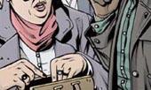
Who is this?
What is she doing?
2)
Who is this?
What is she doing?
3)
Who is this?
What is she doing?
4)
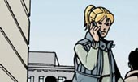
Who is this?
Who is she talking to?
5)
Who is this?
What is he doing?
6)
Who is this?
What is he doing?
TRANSLATION 参考译文
TRANSLATION 参考译文
Police TV
监控录像
丹和苏是伦敦的警察。一个星期二的早晨，丹在生气。
“怎么了，丹？”苏问道。
“看这个，”丹说，“有个人每天都在商店附近偷人家的钱。我们必须阻止这种事。”
“那当然，”苏说，“不过这个人是谁呢？”
“有个慢跑的人，”丹说，“他每天都在商店附近跑步。有时还会撞到人，可能他就是小偷。”
“好，”苏说，“我们去商店。或许能见到那个慢跑的人。”
他们坐在商店对面楼上的一扇窗边。丹拿着对讲机，他们观察着街上的行人。
“看！”苏说道，“那个慢跑的人！”
那个小伙子撞到了一个老太太，老太太摔倒在地。小伙子扶着老太太的胳膊。“对不起，”他说，“需要我帮忙吗？这是你的包。”
这时，一个年轻女子朝他嚷嚷。“别在这儿跑步！”她说，“很危险！走开！”
小伙子跑开了。丹对着对讲机说道：“快！拦住他！他正沿着北街跑！”
一辆警车在北街拦住了那个小伙子。
“您现在还好吧？”苏问老太太。
“我没事儿，谢谢。那个热心的姑娘在哪儿？她不见了。”
“您的钱都在吗？”苏问。
老太太看看包里。“不见了！我的钱放在钱包里，可钱包不见了！”
“好啦，苏，”丹说，“我们去和那个慢跑的人谈谈！”
“你叫什么？”苏问那个小伙子。
“我叫彼得·琼斯。怎么了？你们是谁？”
“我们是警察。你为什么每天都要从商店门口跑过？”
“有什么不行呢？我喜欢跑步。”
“好吧，”丹说，“我们来找找那些钱。”
“什么钱？”彼得·琼斯问，“你们在说什么？我跑步时从来不随身带钱。”
丹搜了搜，可一分钱也没找到。
“现在我能走了吗？”彼得·琼斯问。
“走吧。”丹生气地说，“但别再回来了！”
“凭什么？”彼得生气地问道，“我住这儿！再说我又没做错什么！”他跑开了。
“现在怎么办？”苏问，“那老太太的钱在哪儿？还有她的钱包呢？”
“我不知道，”丹说，“肯定有人偷了，到底是谁呢？”
丹和苏回到商店。“我不明白，”丹说，“那个慢跑的人没有偷钱，那我们必须寻找其他嫌疑人。”
“看，”苏说，“商店的门上有个监控摄像机。或许它能帮上忙。”
他们走进商店查看录像。
“看，”苏说，“这是那个老太太，她正从银行取钱，把钱放进钱包里。现在她正把钱包放到包里。”
“暂停一下录像，”丹说，“现在，仔细看看。有人在盯着她吗？”
“街上有很多人，”苏说，“我也不确定。是那个长头发男人吗？”
“有可能，”丹说，“继续看吧。接下来发生了什么事？”
他们接着看录像。慢跑的人撞到了老太太，停下来帮她，老太太冲他大喊，他就跑开了。然后很多人走过来帮老太太。
“看！”苏说，“那个长头发男人拉着她的胳膊。”
“不错，可那个女人拿着她的包。”丹说，“她拿着包干什么？哦！我看不到！有个男人挡在她前面！”
“听着，我有个主意，”丹说，“你明天去银行取些钱出来。”
“这个主意有什么好啊？”苏问。
“因为我们能暗中观察，”丹回答说，“你从银行取很多钱，让街上所有人都看见。再带个对讲机，这样你就能跟我通话了。”
“好吧，”苏说，“那我们明天早上就行动。”
第二天，苏去了银行。丹和另一个警察吉姆在暗中观察。他们带着对讲机。
“我现在要取钱了。”苏说。
“好的，苏，”丹对着对讲机说，“要让每个人都看见。”
苏掉了些钱在她脚边。街上的人纷纷看着她。
“看——那个长头发男人！”吉姆说，“他正捡钱呢。要我去逮捕他吗？”
“别，先等等。”丹说，“再看看。”
长发男人把钱捡起来还给了苏。“给你，”他说，“不少钱呢——当心点！”
“谢谢！”苏说。
“不客气。”男人笑了笑，走开了。
“你的钱都在吗，苏？”丹用对讲机问。“在，都在。”苏回答说，“我现在做什么？”
“去商店买些东西，再沿着街慢慢走。”丹说，“我们看着你。”
苏买了些苹果、牛奶和面包，然后沿街慢慢走。丹和吉姆一直观察着。
“有人跟踪我吗？”苏问。
“没有，”丹回答说，“有个带小孩的女人。没别人了。”
“别跟着我。”苏对着对讲机说，“不能让人看见你们。我在往右拐，到史密斯大街了……我现在往左拐，到佩格路了。带小孩的那个女人在跟着我……我往右拐，到戴尔大道了。”
“附近人多吗？”丹问。
“不多，很安静。什么事都没有。”
丹和吉姆等着，接着就听到苏在喊：“小心！啊，快来帮我，快！”
彼得·琼斯——那个慢跑的人——撞到了苏，苏摔倒在地。苹果、牛奶和面包掉了一地。
“对不起。”他说，“我来帮你。”
带小孩的女人拉着苏的胳膊。“你没事吧？”她问。“走开！”她冲彼得·琼斯嚷道。
彼得看到了苏口袋里的对讲机。“这是什么？”他问，“警用对讲机？把钱给我，快！”
他拿着钱跑了。
那女人也想跟着他跑掉，但被苏抓住了。“站住！”苏说，“我是警察。不许动！”
“为什么？”女人问，“我是想帮你。那个男的抢了你的钱，不是我！”
“他是你朋友？”苏问，“他住哪儿？”
“我不知道，”女人说，“我不认识他。”
“你叫什么？”苏问道，“你住哪儿？”
“琳达……琳达·威尔克斯。我住在老街14号。”
丹朝苏跑过去。“你没事吧？”他问。
“没事，我还好。”苏说，“赶紧追，丹——快！”
苏用对讲机呼叫了警车。丹紧追彼得·琼斯。“吉姆，他左拐跑到码头路上了！”丹喊道，“看到他了吗？”
“看到了，可他跑得很快。”吉姆说。慢跑者看见了吉姆，然后上了一艘小艇。吉姆跑到河边，也上了那艘小艇。
“站住！”吉姆说，“我是警察——哦，不！”
彼得·琼斯打了吉姆一拳，吉姆掉进了水里。小艇驶向河对岸。
丹把吉姆拉上了岸。“他要进一家咖啡厅。”丹说，“快，我们往桥那儿跑！”
他们过了桥，朝那家咖啡厅跑过去。吉姆绕到了咖啡厅的后面，丹从前面走了进去。
“他在里面吗？”吉姆用对讲机问道。
“在。”丹回答，“吉姆——他出来了！”
“站住，”吉姆说，“我是警察。”
但彼得手里拿着一把刀。
吉姆伸出手。“把刀给我，彼得。”
“别过来！”彼得说，“我可以用这把刀杀了你。”
吉姆看到丹在彼得身后的门里。丹慢慢地、轻轻地走出来。
“快点，彼得，”吉姆说，“把刀给我。”
丹从背后抓住了彼得的胳膊，吉姆把刀从他手里夺过来。丹在彼得裤子里找到了那些钱。
“我现在想回家。”琳达说，“我宝宝又累又饿。”
“你认识彼得·琼斯吗？”苏问，“你是不是和彼得合伙偷钱？”
“不，我不认识他。而且我从来没偷过钱。”
“你认识这个女人吗，彼得？”丹问。
“不认识。”彼得说，“我不认识她。她是谁？”
丹和苏回到办公室。
“琳达是彼得的同伙吗？”丹问苏。
“是，她是。”苏说，“看这段录像。看——她就在那儿！她看着我取了钱，这会儿在给什么人打电话。”
“可她在跟谁说话呢？”
“当然是和彼得。现在她跟踪我，又跟他通了话。她在说我的事。”
丹和苏又去问琳达。
“我能看一下你的手机吗，威尔克斯女士？”苏问。
“我的手机？你为什么想看我的手机？”
“嗯，里面记录了很多号码。”
苏按了琳达手机上的1键。彼得的手机响了起来。苏笑道：“我再问你一遍，威尔克斯女士。你认识彼得·琼斯吗？”
“好吧，是，我认识。我是认识他。可我不偷钱。”
苏和丹把琳达带回她的家。他们一起进屋。
“你床底下有两百英镑，琳达。”丹说，“看——这是那个老太太的钱包。”
“你和宝宝的这张照片照得真好。”苏说，“不过这个男的是谁？是孩子他爸吗？”
“行啦，那是彼得。”琳达说，“是，钱是我偷的。对不起，行了吧？”
“不，琳达，不行。”苏说，“这绝对不行。”
封底
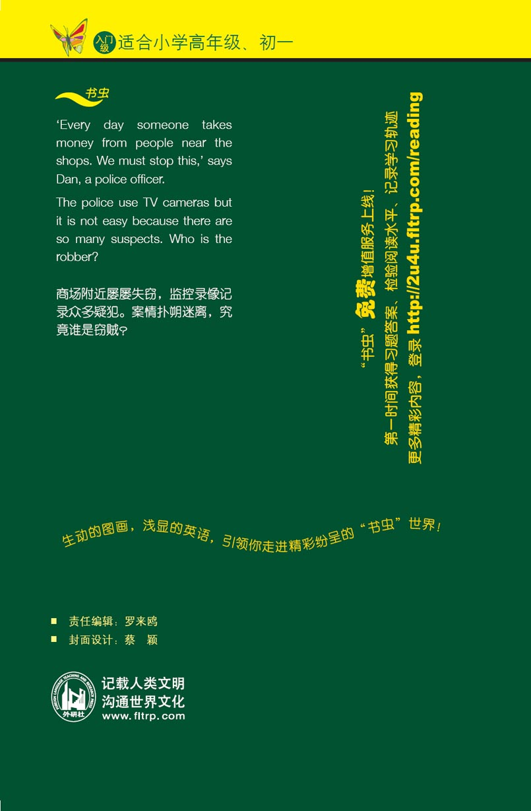